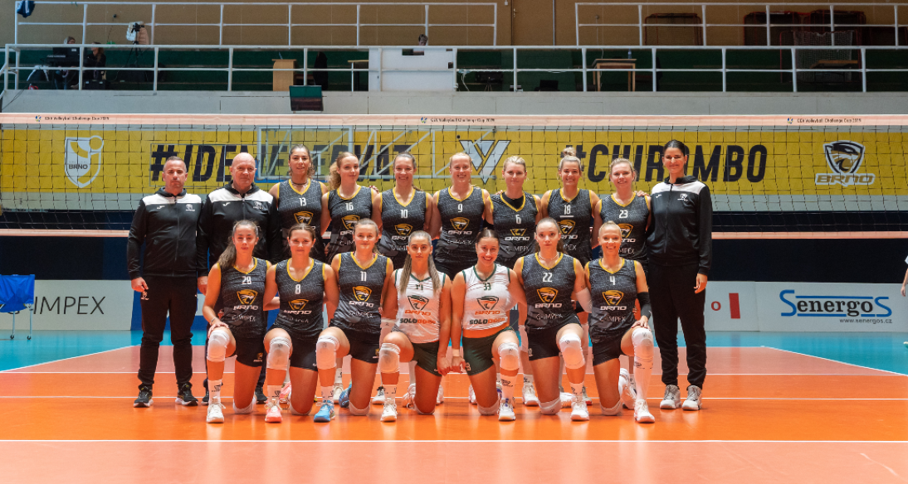

Napsala: Ela Štercová
Datum: 5.5.2026
Sezóna 2025/2026 se zapíše do historie českého volejbalu jako sezóna, ve které tým Šelmy Brno dosáhl dalšího mimořádného úspěchu. Už na začátku základní části bylo patrné, že Šelmy patří mezi nejkvalitnější týmy ligy. Předváděly kvalitní výkony, vyhrávaly důležitá utkání, působily sebevědomě a hlavně velmi sehraně. Jejich hra byla postavena převážně na spolupráci celého týmu, což se ukázalo jako klíčový faktor úspěchu. Vrchol sezóny však přišel až ve finálové sérii proti Liberci. Ta se zpočátku nevyvíjela pro Šelmy příznivě. První dva finálové zápasy prohrály a ocitly se na pokraji prohry. Přes všechen stres a obavy se jim podařilo udělat neuvěřitelný obrat a ve dvou následujících zápasech zvítězily. Celou sérii tak otočily ve svůj prospěch a to na 2:2. Nejzáživnější zápas finále byl bezpochyby ten poslední, který se pro Šelmy odehrál na domácí půdě a to ve Winning Group Areně Rondo. Po obratu z 0:2 na 2:2 bylo jasné, že rozhodne o tom, kdo dostane titul. Brněnský tým zvládl utkání lépe, vyhrál 3:1 a tím získal mistrovský titul. Tím, že minulý rok se jim podařilo získat stejný titul byl tento ještě cennější, protože dosáhly tzv. “doublu”, který je ve volejbalu velmi významný. Velkou roli ve vítězství sehrála také podpora fanoušků. Finálové utkání v brněnské hale sledovalo více než 4500 diváků, což znamenalo rekordní návštěvu ženské extraligy. Atmosféra byla bouřlivá a hráčkám dodávala energii a sebevědomí. Šelmy Brno tak obhájily mistrovský titul, ukázaly svou dominanci a potvrdily, že stále patří na vrchol českého volejbalu.

Zdroje: https://www.idnes.cz/sport/ostatni/selmy-brno-liberec-finale- volejbal-extralig https://sport.ceskatelevize.cz/clanek/volejbal/volejbalistky-kp-brno-porazily- v-prvnim-finale-extraligy-selmy-v-tie-breaku-19149 oficiální instagram: @vkbrno